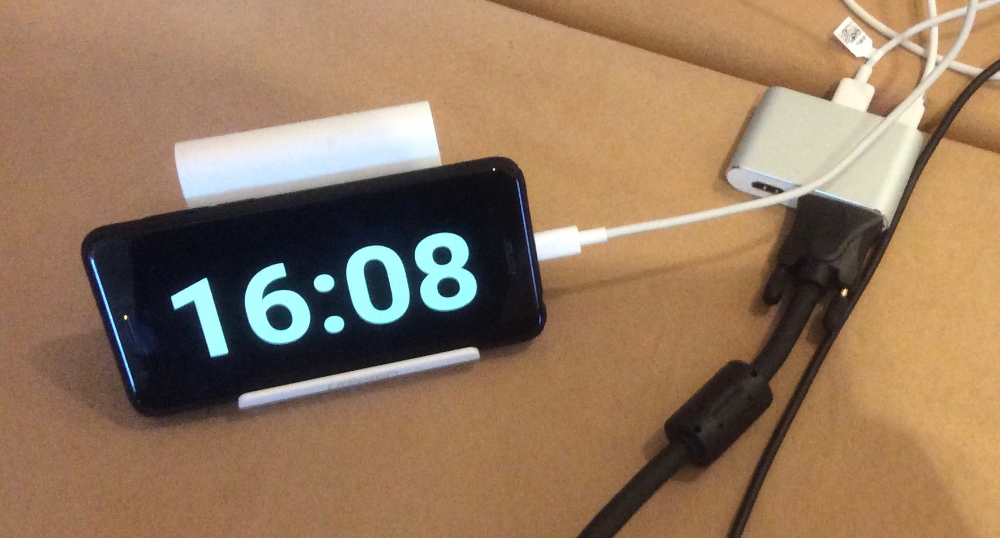
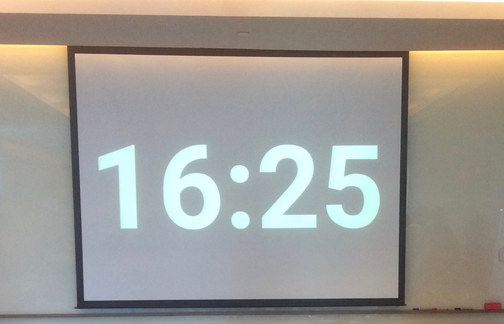

“专心倒计时“（Pomodoro）是一个简单的安卓（Android）设备上可以安装使用的App
下载安装
下载github上最新版 APK 文件
或者用手机扫描二维码下载（微信的扫一扫可能会屏蔽，使用手机上其它的二维码扫描软件）:
开发的缘由
市场上的番茄钟应用都太炫、充斥了广告和推广信息，甚至申请各种不必要的权限，完全是与专心致志的目标背道而驰。
求人不如求己，自己开发一个吧！
“前软件工程师"开发的第一个安卓手机应用，极简单、极干净、不要额外的权限，不要广告。满足自己看书、工作甚至培训上课的需要。
使用方法：
- 启动/暂停：双击 屏幕, 长按 暂停。
- 停止/取消：水平从左边缘划到右边缘
- 切换预设时间（45,30, 25, 15, 10, 7, 5, 3, 1分钟）：在定时器不处于运行或暂停的状态时，水平滑过屏幕
- 自由调整时间：缩放（2指），滚动（1指，垂直方向）
如果倒计时时间很长，手机会锁屏或休眠，需要允许”唤醒“的权限，和打开这个app的”锁屏通知“开关。
培训教室场景：
 